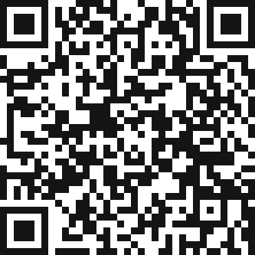

Sa prvog sastanka redakcije
Za sve koji nisu mogli doći
Za sve koji nisu mogli doći
Ako nisi bio/la na prvom sastanku, ovdje je ukratko sve što smo pričali i dogovorili.
Druga perspektiva su školske novine koje pišu učenici Druge gimnazije. Novine smo pokrenuli sami, bez pomoći uprave škole, i niko izvan redakcije ne odobrava naše tekstove prije objave. Objavljujemo na drugaperspektiva.org i na Instagramu @drugaperspektiva.dgs. Sada nas je preko 40.
Najviše smo pričali o tome da smo mi glas učenika. Pišemo i o dobrim i o lošim stvarima u školi, ali uvijek tačno i fer.
Možeš pisati za bilo koju rubriku i ne moraš odmah birati jednu.
| Rubrika | O čemu pišemo, na primjer |
|---|---|
| Vijesti o školi | Sve iz škole: takmičenja, novi profesori, promjene rasporeda |
| Ostale vijesti | Vijesti izvan škole koje su bitne mladima |
| Mišljenje | Tekstovi u kojima pišeš šta ti misliš, potpisani imenom i prezimenom |
| Sport | Gimnazijada, utakmice, priče o našim sportistima |
| Umjetnost i kultura | Recenzije filmova i knjiga, školske priredbe, šta pogledati za vikend |
| Nauka i tehnologija | Nauka, tehnologija i projekti naših učenika |
Mišljenje ne mora biti kritika. Može biti kolumna („Zašto učenici sve manje čitaju?“), tekst o nečemu što sve nervira („Digitalni haos u školskim klupama“), komentar na neku školsku odluku, recenzija, otvoreno pismo ili tekst „za i protiv“ koji pišu dvoje učenika s različitim stavovima. Stav može biti kakav god hoćeš, samo činjenice moraju biti tačne.
Ne moraš čekati da ti dam temu. Ako imaš ideju, pošalji mi je na Instagram, Viber ili mail i napiši ukratko o čemu bi pisao/la, zašto je to zanimljivo baš sada i s kim bi razgovarao/la. Ako je ideja dobra, pišeš je ti.
Ako pišeš o nečemu osjetljivom, na primjer o odlukama uprave, javi mi se prije nego što počneš.
Rad u novinama možete upisati kao SA ili CAS sate. Okvirno procijeni koliko si radio/la i upiši to u ManageBac. Kao supervizora navedi profesoricu Merimu Kurtović Čengić ili mene. Računa se i ono što nije pisanje, na primjer slikanje, uređivanje i rad na Instagramu. Tačna pravila još ne znamo, javit ću čim saznam.
Smisli jednu ideju za tekst i pošalji mi je na Viber.
Dovoljne su dvije-tri rečenice. Uđi u naš Drive i zaprati @drugaperspektiva.dgs. Prije prvog teksta pročitaj vodič Kako pisati za Drugu perspektivu.
Pitanja: Viber, Instagram @tarikbecarevic ili tarik.becarevic@2gimnazija.edu.ba
drive.google.com/drive/folders/1gA208WxlCvaduMyb1M_azrpUN4x8iWUJ

Naš Drive